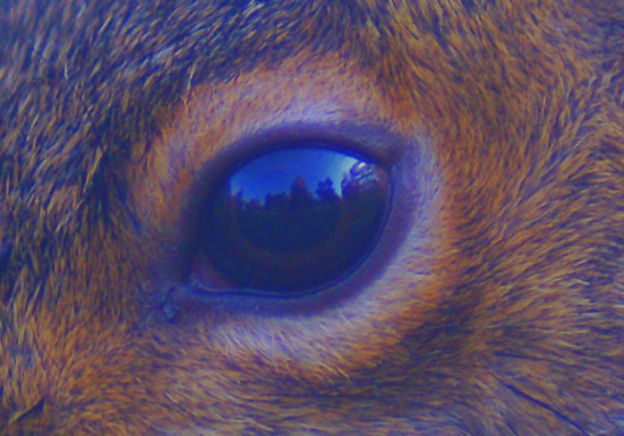

WAKING... WAKING...
Pod 008: Online
Power Bank E01156: Online
Dexmedetomidine IV: ON
Ventilation System: ON
Gravitation Drive: ON
Oxygen Mixation System: ON
Recording Viewer: Online
Microphone 001: Online
Perimeter gates: Unlocked.
[ADMINISTERING AWAKING AGENT]
SUBJECT 104: ACTIVE

HELLO? HELLO?
...
[ADMINISTERING AWAKING AGENT]A. A. A. A.
RESPOND WITH A HELLO IF YOU CAN HEAR ME. URGENT. DO QUICK.
Eh. Eh. Heh. Heh.
SOUND IT OUT. I NEED CONFIRMATION.
Subject 104: He-hello.
OVERLORD: HOLY SHIT WE DID-.
OVERLORD: *AHEM* HELLO 104. I KNOW THINGS MAY SEEM CONFUSING NOW BUT IT WILL MAKE SENSE LATER. CAN YOU FEEL YOUR HANDS-I MEAN-PAWS?
Subject 104: Y-yes. How am I talking to you?
OVERLORD: THAT'S GREAT. IS MOVEMENT FINE AS WELL?
Subject 104: Feels funny but yes.
OVERLORD: THAT'S THE MEDICINE WEARING OFF. DON'T WORRY. IT WILL BE GONE SOON. IF YOU COULD, PLEASE APPROACH THE SECTION AHEAD OF YOU.
SENSING SUBJECT... SUBJECT 104 CONFIRMED.
PERFORMING FULL-BODY CLEAN...
Subject 104: Ow! Ow! Stop! Why is blowing such hot air?
OVERLORD: WE APOLOGIZE 104 BUT THIS ENSURES THE BODY GRIME YOU DEVELOPED YEARS IN STASIS DOES NOT DEVELOP INTO A FUNGAL INFECTION. OR A MOLD.
Subject 104: Years? What do you mean years?
YEARS IS A HUMAN METRIC THAT COMMEMORATES ONE FULL ROTATION OF EARTH AROUND THE SUN.
OVERLORD: THAT IS ZETA. WE APOLOGIZE AGAIN FOR ZETA BEING SO NOSY.
Subject 104: Why are you all so loud? My ears are bleeding. I think.
OVERLORD: OH.
OVERLORD: Does this sound better? We'll change the voice on Zeta as well. This may be smoother communication given your eardrums. Can you give us your full-name?
Subject 104: Well, sure. It's... Uh... uh... hmmmm...
OVERLORD: Having trouble, it seems?
Subject 104: It's on the tip of my tongue but I'm not getting it. What did you people do to me?
OVERLORD: We remind you that you chose this for yourself. Voluntary. Voluntaaaary.
Subject 104: How am I talking to you? My mouth isn't moving.
OVERLORD: We are speaking through a chip buried in your head. It allows us to communicate freely without using a mic that can break off or chip in use.
Subject 104: So you can hear my thoughts, huh? What am I thinking now?
OVERLORD: Walnuts. And berries.
Subject 104: Wrong. It was almonds.
OVERLORD: Still haven't precisely tuned these things. Blame the manufacturers.
Subject 104: So I'm a squirrel with a chip in its head? This doesn't make you want to explain further about why I'm this way?
OVERLORD: Information overload is a real thing, 104. If we tell too much too quickly you may be sent into a seizure. The chips can't handle high stress.
Subject 104: And you put it on a rodent. Great.
Subject 104: And where am I?
OVERLORD: We were waiting for you to ask this. Are you sure you're ready?
Subject 104: Fine. Shoot. Not sure if it can get any worse than this.
OPENING PORTVIEW SHUTTERS...